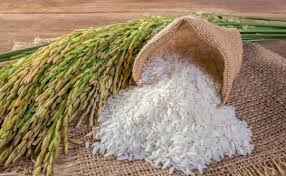
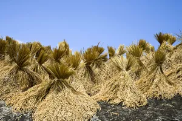
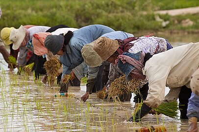
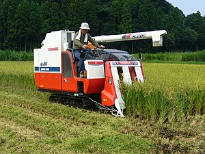
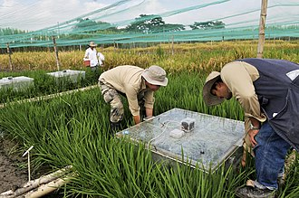

About Rice
-

Physical description
The cultivated rice plant is an annual grass and grows to about 1.2 metres (4 feet) in height. The leaves are long and flattened and are borne on hollow stems. The fibrous root system is often broad and spreading. The panicle, or inflorescence (flower cluster), is made up of spikelets bearing flowers that produce the fruit, or grain. Varieties differ greatly in the length, shape, and weight of the panicle and the overall productivity of a given plant.
-

Domestication and cultivation
Many cultures have evidence of early rice cultivation, including China, India, and the civilizations of Southeast Asia. However, the earliest archaeological evidence comes from central and eastern China and dates to 7000–5000 BCE. More than 90 percent of the world’s rice is grown in Asia, principally in China, India, Indonesia, and Bangladesh, with smaller amounts grown in Japan, Pakistan, and various Southeast Asian nations. Rice is also cultivated in parts of Europe, in North and South America, and in Australia.
-

Rice processing and uses
The harvested rice kernel, known as paddy, or rough, rice, is enclosed by the hull, or husk. Milling usually removes both the hull and bran layers of the kernel, and a coating of glucose and talc is sometimes applied to give the kernel a glossy finish. Rice that is processed to remove only the husks, called brown rice, contains about 8 percent protein and small amounts of fats and is a source of thiamine, niacin, riboflavin, iron, and calcium. Rice that is milled to remove the bran as well is called white rice and is greatly diminished in nutrients.
-

Growing Rice
Like all crops, rice depends for its growth on both biotic and abiotic environmental factors. The principal biotic factors are crop variety, pests, and plant diseases. Abiotic factors include the soil type, whether lowland or upland, amount of rain or irrigation water, temperature, day length, and intensity of sunlight
-

Harvesting
Across Asia, unmilled rice or "paddy" (Indonesian and Malay padi), was traditionally the product of smallholder agriculture, with manual harvesting. Larger farms make use of machines such as combine harvesters to reduce the input of labour.[12] The grain is ready to harvest when the moisture content is 20–25%. Harvesting involves reaping, stacking the cut stalks, threshing to separate the grain, and cleaning by winnowing or screening. The rice grain is dried as soon as possible to bring the moisture content down to a level that is safe from mould fungi. Traditional drying relies on the heat of the sun, with the grain spread out on mats or on pavements.[.
-

In 2022, greenhouse gas emissions from rice cultivation were estimated at 5.7 billion tonnes CO2eq, representing 1.2% of total emissions.[56] Within the agriculture sector, rice produces almost half the greenhouse gas emissions from croplands,[57] some 30% of agricultural methane emissions, and 11% of agricultural nitrous oxide emissions.[58] Methane is released from rice fields subject to long-term flooding, as this inhibits the soil from absorbing atmospheric oxygen, resulting in anaerobic fermentation of organic matter in the soil.[59] Emissions can be limited by planting new varieties, not flooding continuously, and removing straw